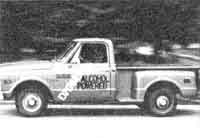
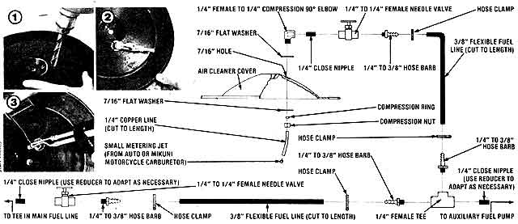

Here's the latest in alcohol-powered vehicle technology . . .
In our last issue, we described the process of converting a gasoline-burning automotive engine to operate on home-brewed ethyl alcohol (see MOTHER NO. 59, page 78), and we also specified the particulars of rigging up a dual-fuel system that would allow the vehicle to run on either alcohol or gasoline with only a minimum of "switchover" tinkering.
Now-with winter upon us-it's time to go one step further with that conversion . . . and describe how to construct a fool proof-and inexpensive-cold weather starting system.
As you know, alcohol fuel is desirable from a safety standpoint, since it is not dangerously volatile, as is gasoline. This advantage, however, can become a' minor problem during the winter season (when the temperature is below 45°F) because the carbureted ethanol fuel has a tendency to remain in liquid form as it passes through the engine's intake manifold . . . rather than turn into a mist-like vapor as it should.
So, faced with this knotty problem, MOTHER's researchers came up with a low-cost, easy answer . . . they merely inject a fine stream of gasoline-taken from the auxiliary, fuel supply-directly down the carburetor throat. The minute spray is adequate to start the engine and keep it running till it's warm enough to utilize pure alcohol fuel.
Start off by purchasing (or better yet; scrounging) all the plumbing hardware called for in the accompanying illustra tion. Then gather up an assortment of end wrenches, a screwdriver, a power drill with a 7/16" bit, a soldering iron, a small tubing cutter, and some Teflon thread tape.
When you have everything together, remove the air cleaner lid from its housing and determine the best place to position your "squirt" nozzle. Remember that you want the sprayer to shoot directly down into the throat of the carburetor, and that the movable choke plate should not interfere with the injector pipette.
Now drill a 7/16" hole in the air cleaner cover at the spot you've chosen (see Photo 1). Next, cut a short length of 1/4" copper tubing, then fasten the needle valve to the elbow as in our illustration.
Finally, insert your copper tube into the opposite end of the elbow and attach the entire assembly to the sir filter cap (Photo 2).
With this "nozzle holder" in place, you can now solder a brass metering jet to its tip, as in Photo 3. Select a jet that will fit into the end of the pipe, and-if possible-choose one with a tiny orifice (a hole about.020" is fine). If you've picked up a nozzle with too large an opening, simply solder it partially shut by inserting a thin needle into the opening and removing it after the solder has set.
Now place the air filter lid on top of its housing, bolt the cap into position, and go on to complete the plumbing circuit as depicted in our illustration. Remember that this system is designed to be used in conjunction with the dual-fuel setup featured in MOTHER NO. 59, so it's merely a matter of replacing the circuitry-described in that issue-between the auxiliary fuel pump and the main fuel line, and installing the combination of parts detailed here.
Once your cold-start system has been installed, you'll find it easy to operate. Just before cranking over your engine, open your choke (if it's manually controlled) and flip on (for a few seconds) the switch that activates the secondary gasoline pump. Then shut it off, close the choke as you would normally, and fire the engine up. It should start immediately and-in less than frigid weather-run on alcohol alone. On extremely cold days, you may have to inject additional gasoline as the engine is running.. and, since the choke flap is normally pulled partially open by the vacuum draw of the engine, you can leave the choke in a closed position till the engine warms and not interfere with the necessary flow of gasoline.
If your vehicle is equipped with an automatic choke, you can either install a manual conversion kit (available at most auto parts stores for about $6.00) or adjust the choke so it remains partially open even when the engine is cold.
MOTHER's researchers have-so far -had nothing but success with their newly plumbed "rig" . . . and can even run the engine on the "squirting's" alone. In severely cold climates, a slightly larger injection jet orifice might be required, but that's just a minor adjustment. In the meantime, though, we've been working on additional engine modifications, and we'll have more on those in MOTHER NO. 61!
|
 |
 |
|